In Green
An observational series made in parks, ravines, and green spaces. These photographs observe people in contact with nature inside the city — how bodies settle, how solitude is held in the natural world where presence is an invitation.
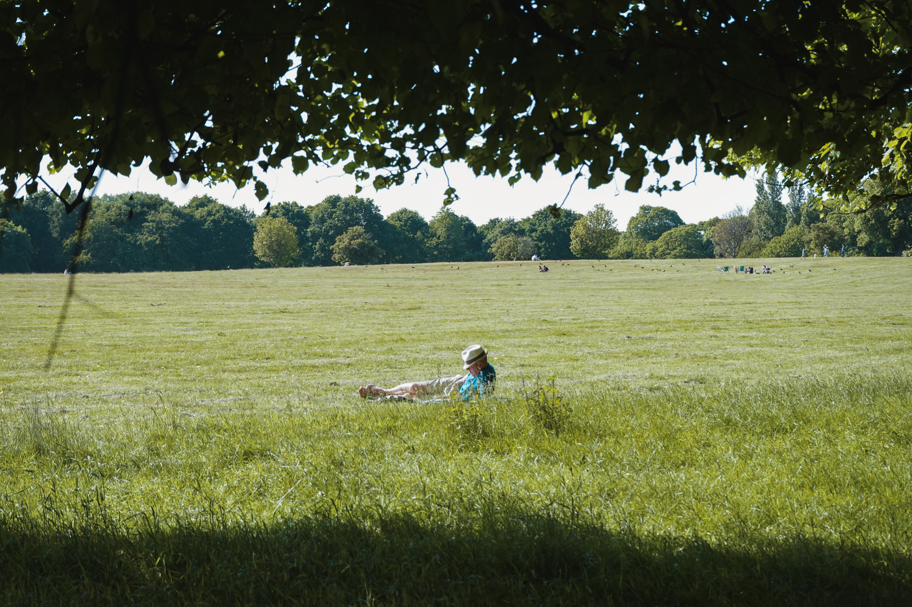
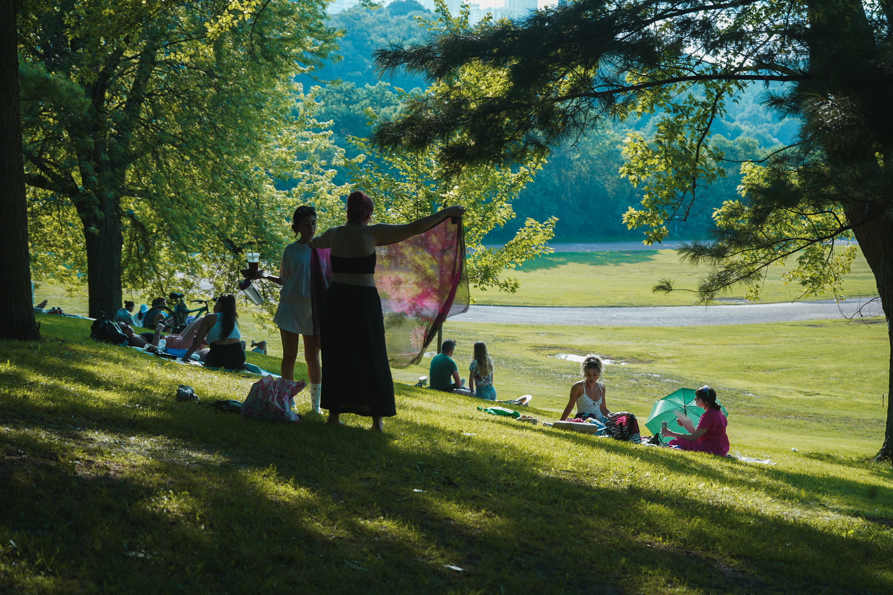
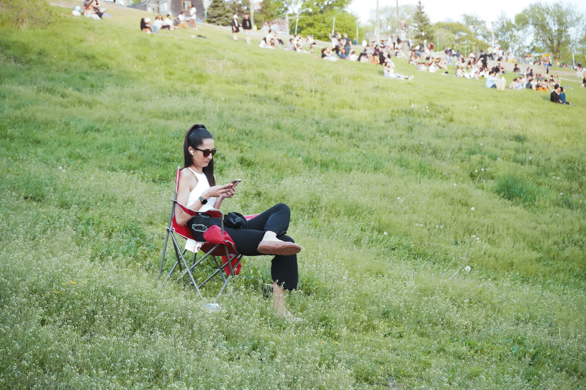


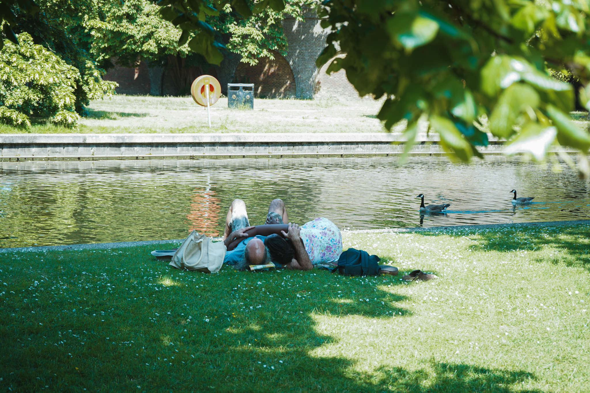
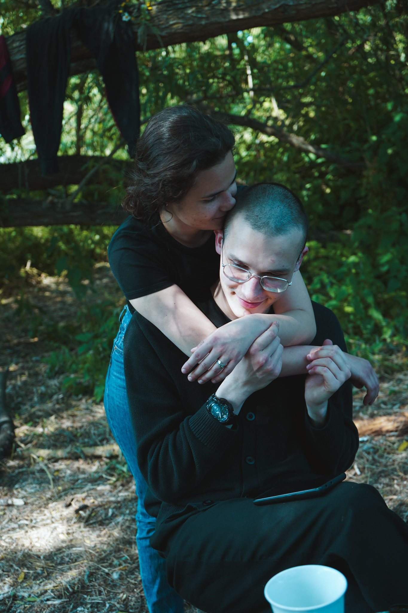


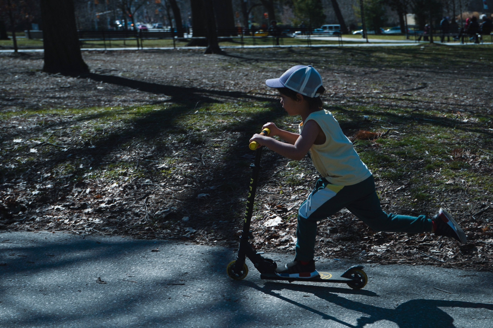
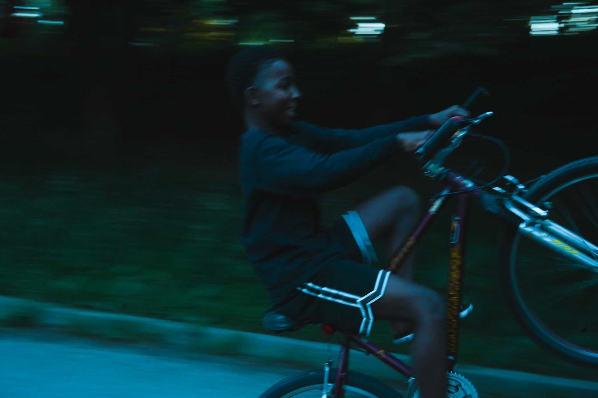
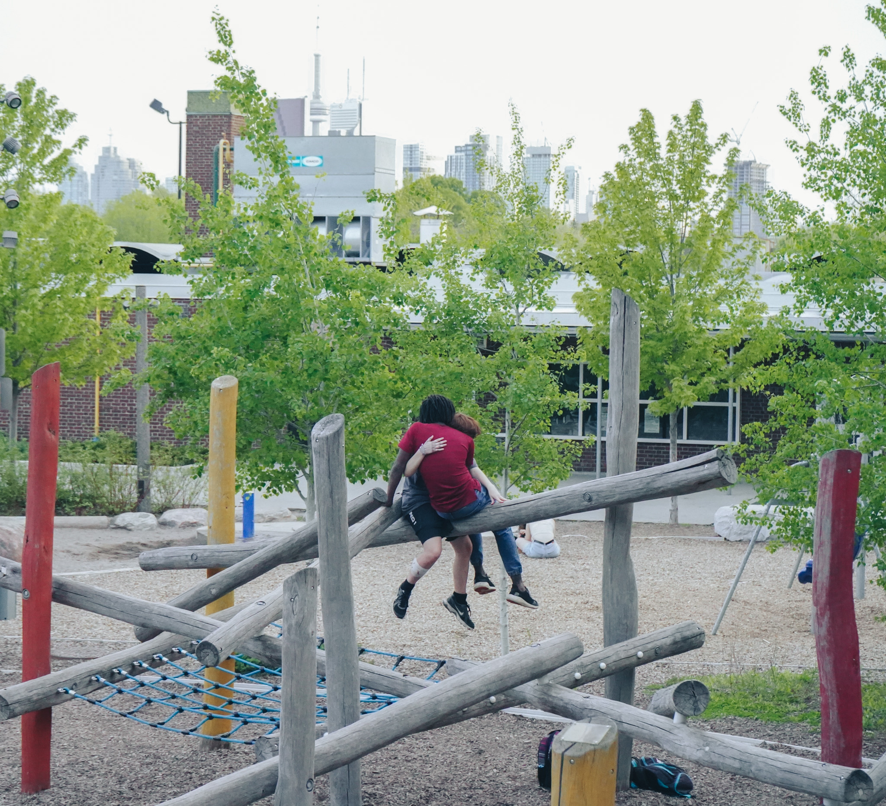

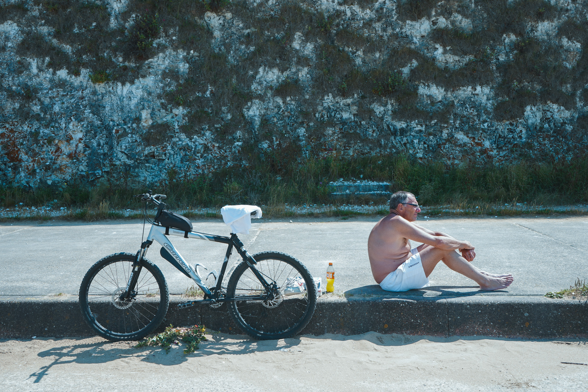
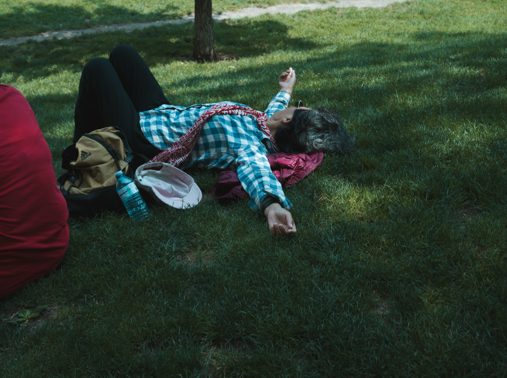


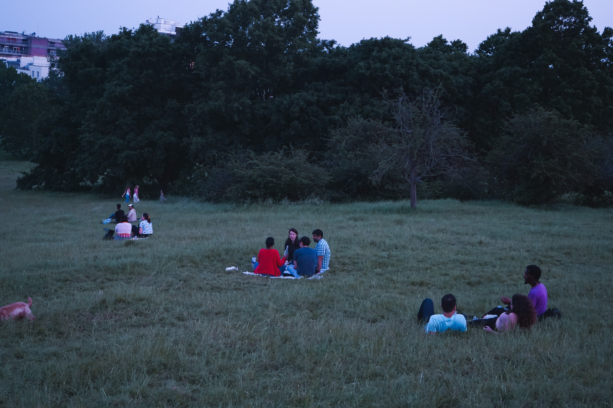
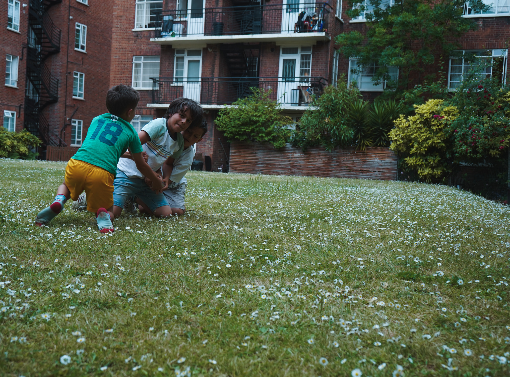
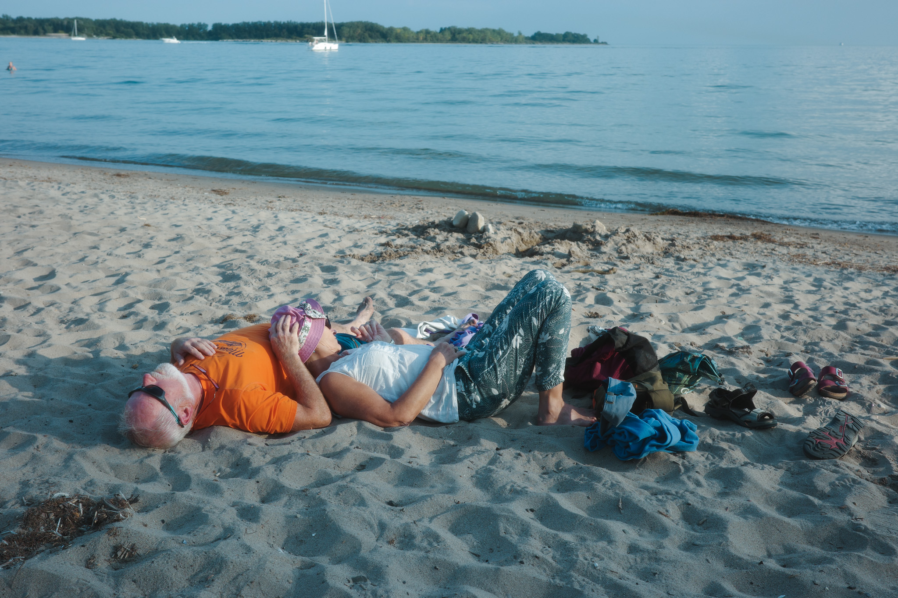